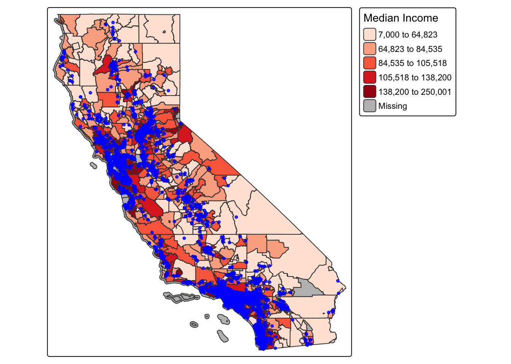
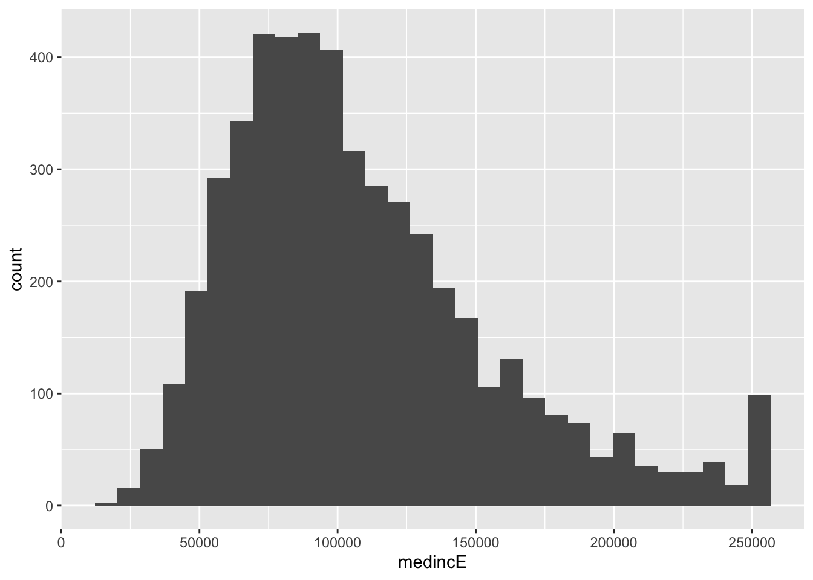

library(sf)## Linking to GEOS 3.13.0, GDAL 3.8.5, PROJ 9.5.1; sf_use_s2() is TRUElibrary(MapGAM)## Loading required package: sp## Loading required package: gam## Loading required package: splines## Loading required package: foreach## Loaded gam 1.22-5## Loading required package: survivallibrary(tidyverse)## ── Attaching core tidyverse packages ──────────────────────── tidyverse 2.0.0 ──
## ✔ dplyr 1.1.4 ✔ readr 2.1.5
## ✔ forcats 1.0.0 ✔ stringr 1.5.1
## ✔ ggplot2 3.5.2 ✔ tibble 3.2.1
## ✔ lubridate 1.9.4 ✔ tidyr 1.3.1
## ✔ purrr 1.0.4## ── Conflicts ────────────────────────────────────────── tidyverse_conflicts() ──
## ✖ purrr::accumulate() masks foreach::accumulate()
## ✖ dplyr::filter() masks stats::filter()
## ✖ dplyr::lag() masks stats::lag()
## ✖ purrr::when() masks foreach::when()
## ℹ Use the conflicted package (<http://conflicted.r-lib.org/>) to force all conflicts to become errorslibrary(tidycensus)
library(flextable)##
## Attaching package: 'flextable'
##
## The following object is masked from 'package:purrr':
##
## composelibrary(RColorBrewer)
library(tmap)Q1. Bring in CAdata
data(CAdata)
ca_pts <- CAdata
ca_proj <- "+proj=lcc +lat_1=40 +lat_2=41.66666666666666
+lat_0=39.33333333333334 +lon_0=-122 +x_0=2000000
+y_0=500000.0000000002 +ellps=GRS80
+datum=NAD83 +units=m +no_defs"
ca_pts <- st_as_sf(CAdata, coords=c("X","Y"), crs=ca_proj)Q2. Use Tidycensus to get 2019-2023 estimates of Census tract median home income
ca.tract.medinc <- get_acs(geography = "tract",
year = 2023,
variables = c(medinc = "B19013_001"),
state = "CA",
output = "wide",
survey = "acs5",
geometry = TRUE,
cb = FALSE)## Getting data from the 2019-2023 5-year ACS## Downloading feature geometry from the Census website. To cache shapefiles for use in future sessions, set `options(tigris_use_cache = TRUE)`.## | | | 0% | | | 1% | |= | 1% | |= | 2% | |== | 2% | |== | 3% | |== | 4% | |=== | 4% | |=== | 5% | |==== | 5% | |==== | 6% | |===== | 6% | |===== | 7% | |===== | 8% | |====== | 8% | |====== | 9% | |======= | 9% | |======= | 10% | |======= | 11% | |======== | 11% | |======== | 12% | |========= | 12% | |========= | 13% | |========= | 14% | |========== | 14% | |========== | 15% | |=========== | 15% | |=========== | 16% | |============ | 16% | |============ | 17% | |============ | 18% | |============= | 18% | |============= | 19% | |============== | 19% | |============== | 20% | |============== | 21% | |=============== | 21% | |=============== | 22% | |================ | 22% | |================ | 23% | |================ | 24% | |================= | 24% | |================= | 25% | |================== | 25% | |================== | 26% | |=================== | 26% | |=================== | 27% | |=================== | 28% | |==================== | 28% | |==================== | 29% | |===================== | 29% | |===================== | 30% | |===================== | 31% | |====================== | 31% | |====================== | 32% | |======================= | 32% | |======================= | 33% | |======================= | 34% | |======================== | 34% | |======================== | 35% | |========================= | 35% | |========================= | 36% | |========================== | 36% | |========================== | 37% | |========================== | 38% | |=========================== | 38% | |=========================== | 39% | |============================ | 39% | |============================ | 40% | |============================ | 41% | |============================= | 41% | |============================= | 42% | |============================== | 42% | |============================== | 43% | |============================== | 44% | |=============================== | 44% | |=============================== | 45% | |================================ | 45% | |================================ | 46% | |================================= | 46% | |================================= | 47% | |================================= | 48% | |================================== | 48% | |================================== | 49% | |=================================== | 49% | |=================================== | 50% | |=================================== | 51% | |==================================== | 51% | |==================================== | 52% | |===================================== | 52% | |===================================== | 53% | |===================================== | 54% | |====================================== | 54% | |====================================== | 55% | |======================================= | 55% | |======================================= | 56% | |======================================== | 56% | |======================================== | 57% | |======================================== | 58% | |========================================= | 58% | |========================================= | 59% | |========================================== | 59% | |========================================== | 60% | |========================================== | 61% | |=========================================== | 61% | |=========================================== | 62% | |============================================ | 62% | |============================================ | 63% | |============================================ | 64% | |============================================= | 64% | |============================================= | 65% | |============================================== | 65% | |============================================== | 66% | |=============================================== | 66% | |=============================================== | 67% | |=============================================== | 68% | |================================================ | 68% | |================================================ | 69% | |================================================= | 69% | |================================================= | 70% | |================================================= | 71% | |================================================== | 71% | |================================================== | 72% | |=================================================== | 72% | |=================================================== | 73% | |=================================================== | 74% | |==================================================== | 74% | |==================================================== | 75% | |===================================================== | 75% | |===================================================== | 76% | |====================================================== | 76% | |====================================================== | 77% | |====================================================== | 78% | |======================================================= | 78% | |======================================================= | 79% | |======================================================== | 79% | |======================================================== | 80% | |======================================================== | 81% | |========================================================= | 81% | |========================================================= | 82% | |========================================================== | 82% | |========================================================== | 83% | |========================================================== | 84% | |=========================================================== | 84% | |=========================================================== | 85% | |============================================================ | 85% | |============================================================ | 86% | |============================================================= | 86% | |============================================================= | 87% | |============================================================= | 88% | |============================================================== | 88% | |============================================================== | 89% | |=============================================================== | 89% | |=============================================================== | 90% | |=============================================================== | 91% | |================================================================ | 91% | |================================================================ | 92% | |================================================================= | 92% | |================================================================= | 93% | |================================================================= | 94% | |================================================================== | 94% | |================================================================== | 95% | |=================================================================== | 95% | |=================================================================== | 96% | |==================================================================== | 96% | |==================================================================== | 97% | |==================================================================== | 98% | |===================================================================== | 98% | |===================================================================== | 99% | |======================================================================| 99% | |======================================================================| 100%Q3. Check projections
st_crs(ca_pts)==st_crs(ca.tract.medinc)## [1] FALSEQ4. Reproject CAdata to match Census data
ca_pts_proj<-st_transform(ca_pts,st_crs(ca.tract.medinc))
st_crs(ca_pts_proj)==st_crs(ca.tract.medinc)## [1] TRUEQ5. Overlap map of CAdata with Census data
tmap_mode("plot")## ℹ tmap mode set to "plot".ca.inc.map <- tm_shape(ca.tract.medinc) +
tm_polygons(col = "medincE", style = "quantile",palette = "Reds",
title = "Median Income") +
tm_shape(ca_pts_proj) +
tm_dots(size=0.25, alpha=0.8, col="blue")##
## ── tmap v3 code detected ───────────────────────────────────────────────────────
## [v3->v4] `tm_polygons()`: instead of `style = "quantile"`, use fill.scale =
## `tm_scale_intervals()`.
## ℹ Migrate the argument(s) 'style', 'palette' (rename to 'values') to
## 'tm_scale_intervals(<HERE>)'[v3->v4] `tm_polygons()`: use 'fill' for the fill color of polygons/symbols
## (instead of 'col'), and 'col' for the outlines (instead of 'border.col').[v3->v4] `tm_polygons()`: migrate the argument(s) related to the legend of the
## visual variable `fill` namely 'title' to 'fill.legend = tm_legend(<HERE>)'[v3->v4] `tm_dots()`: use `fill_alpha` instead of `alpha`.ca.inc.map## [cols4all] color palettes: use palettes from the R package cols4all. Run
## `cols4all::c4a_gui()` to explore them. The old palette name "Reds" is named
## "brewer.reds"
## Multiple palettes called "reds" found: "brewer.reds", "matplotlib.reds". The first one, "brewer.reds", is returned.
#Run Subset so it renders in view mode
#tmap_mode("view")
#ca.tract.medinc_small <- ca.tract.medinc[1:2500, ]
#ca_pts_proj_small <- ca_pts_proj[1:2500, ]
#tm_shape(ca.tract.medinc_small) +
# tm_polygons(col = "medincE", style = "quantile",palette = "Reds",
# title = "Median Income") +
# tm_shape(ca_pts_proj_small) +
# tm_dots(size=0.5, alpha=0.8, col="blue")Q6. Spatially join cancer data to census data
## Spatially join the cancer point data to the walkability polygon data
census_cancer = st_join(ca_pts_proj, ca.tract.medinc)
## Take a look at a summary of the values
summary(census_cancer$medincE)## Min. 1st Qu. Median Mean 3rd Qu. Max. NA's
## 13735 74028 98000 108740 133056 250001 7Alternate approach census_cancer_nomiss <- census_cancer %>% subset(!is.na(medincE))
census_cancer_nomiss <- census_cancer %>% drop_na(medincE)
summary(census_cancer_nomiss$medincE)## Min. 1st Qu. Median Mean 3rd Qu. Max.
## 13735 74028 98000 108740 133056 250001Q8. Histogram
census_cancer_nomiss %>%
ggplot() +
geom_histogram(mapping = aes(x=medincE)) ## `stat_bin()` using `bins = 30`. Pick better value with `binwidth`.
Q9. Quartiles
census_cancer_nomiss <- census_cancer_nomiss %>%
mutate(medinc_quartile = ntile(medincE, 4))
glimpse(census_cancer_nomiss)## Rows: 4,993
## Columns: 10
## $ time <dbl> 1.2759763, 4.2121775, 0.2074870, 3.5099074, 10.2977017…
## $ event <dbl> 1, 1, 1, 1, 0, 1, 0, 1, 1, 1, 1, 1, 0, 1, 1, 1, 1, 1, …
## $ AGE <int> 67, 56, 67, 69, 75, 59, 62, 39, 68, 72, 78, 79, 46, 77…
## $ INS <fct> Mcr, Mcd, Mng, Mcr, Mng, Mcr, Oth, Uni, Uni, Uni, Mcr,…
## $ GEOID <chr> "06055201101", "06037430901", "06065030400", "06013346…
## $ NAME <chr> "Census Tract 2011.01; Napa County; California", "Cens…
## $ medincE <dbl> 131528, 84671, 67642, 184271, 135083, 54579, 99694, 60…
## $ medincM <dbl> 25924, 6623, 10725, 42054, 24336, 6381, 21310, 14455, …
## $ geometry <POINT [°]> POINT (-122.3492 38.3025), POINT (-118.0174 34.1…
## $ medinc_quartile <int> 3, 2, 1, 4, 4, 1, 3, 1, 1, 3, 3, 1, 3, 4, 3, 3, 3, 3, …Q10. Tables by event
## Create a contingency table of event by walk_quartile
tab <- table(census_cancer_nomiss$medinc_quartile, census_cancer_nomiss$event)
tab##
## 0 1
## 1 484 765
## 2 473 775
## 3 489 759
## 4 521 727
Hmmm, that’s interesting, but let’s look at this by percentages instead.
## Convert to percentages by column
tab_col_perc <- prop.table(tab, margin = 2) * 100
round(tab_col_perc, 1)##
## 0 1
## 1 24.6 25.3
## 2 24.0 25.6
## 3 24.9 25.1
## 4 26.5 24.0Q11. Run Chi-squared test
## Chi-squared test
chisq.test(tab)##
## Pearson's Chi-squared test
##
## data: tab
## X-squared = 4.2989, df = 3, p-value = 0.2309
OK, how do we interpret this? Our null hypothesis is that there is no association between mortality at end of follow-up and increasing quartile of median income. Our alternative hypothesis is that there is an association between mortality at end of follow-up and increasing quartile of median income. We use a two-sided chi-squared test with alpha=0.05. Assuming no sources of bias and that the null hypothesis is true, the probability of observing increases in mortality at end of follow-up with increasing quartiles of walkability as or more extreme as those produced in these data is 0.2309. Since p>0.05, we fail to reject the null hypothesis and conclude that median income is not associated with mortality at end of follow-up (under the assumptions stated above). In other words, we don’t see a relationship between census tract median income exposure and our outcome (dying over followup).